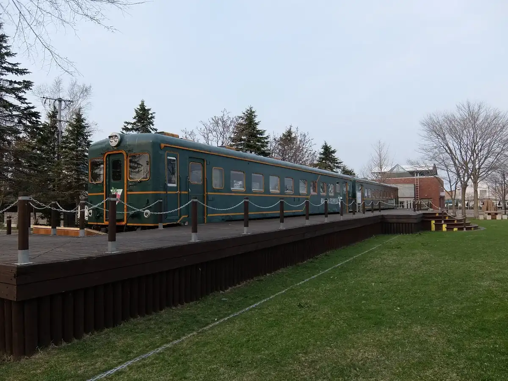
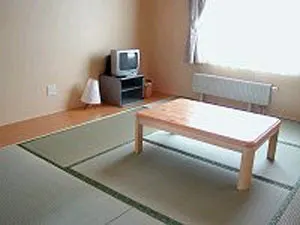
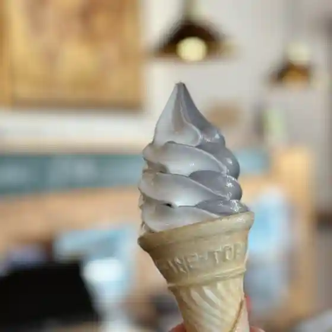
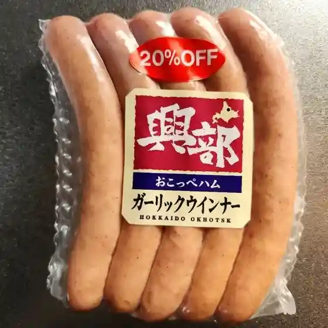
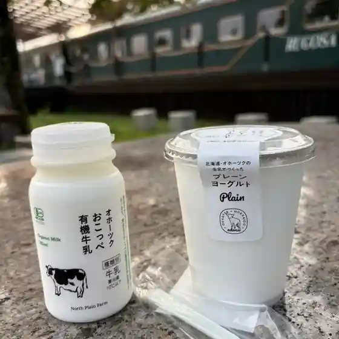
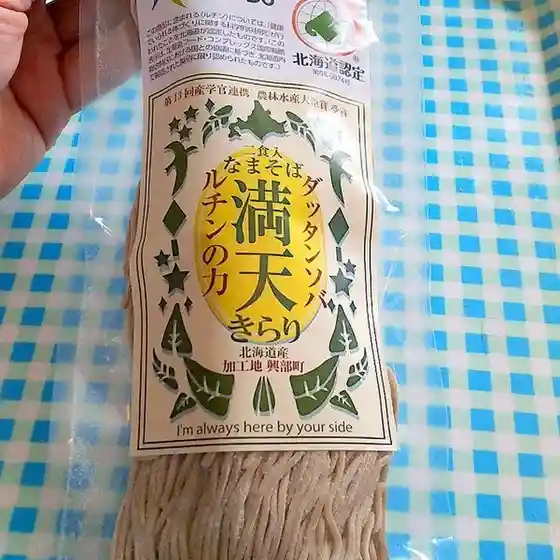
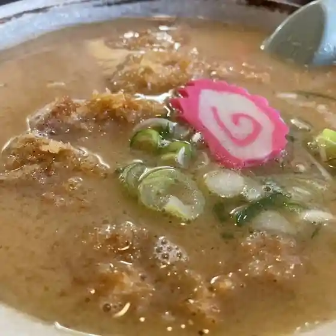

Okoppe
Okoppe · Hokkaido
Okoppe
Highlighted on the Hokkaido map.

Stay
冨田ファーム

Tomita Farm
Farm stay in Okoppe, Hokkaido.
Dining
セイコーマート 沙留店
Seikoomaato Sa Ryuu Mise
冨田ファーム

Tomita Faamu
ミルクホール

Mirukuhooru
LAWSON 紋別興部町店

Lawson Monbetsu Okoppechou Mise
オホーツククリーンミート

Ohootsukukuriinmiito
道の駅 おこっぺ

Michi No Eki Okoppe
小林食品

Kobayashi Shokuhin
興盛亭

Kyou Jou Tei
清寿し
Kiyoshi Hisashi Shi
セイコーマート 興部店
Seikoomaato Okoppe Mise
らーめん 池のかえる
Raamen Ike Nokaeru
CLC
Clc
ペンション鈴木屋
Penshon Suzuki Ya
八千代館
Yachiyo Kan
おこっぺマート
Okoppe Maato
チーズ工房アドナイ
Chiizu Koubou Adonai
OMURA
Omura
おこっぺんはうす
Okoppenhausu
麦
Mugi
ノース プレイン ファーム
Noosu Purein Faamu
おこっぺアイス直売店
Okoppe Aisu Chokubai Mise
キキトキ
Kikitoki
山賊焼
Sanzoku Yaki
おこっぺ物産館
Okoppe Bussan Kan